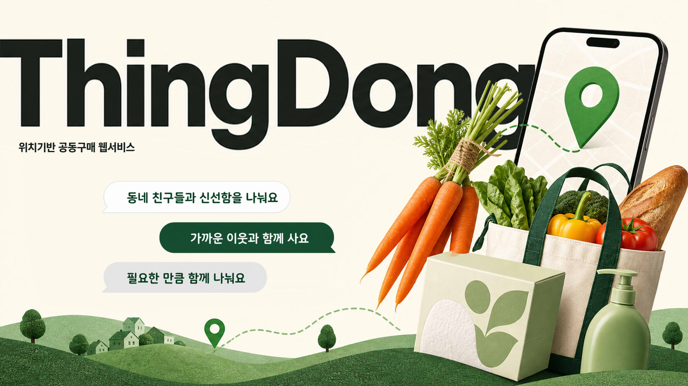
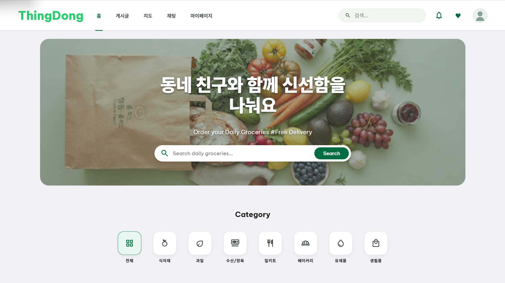
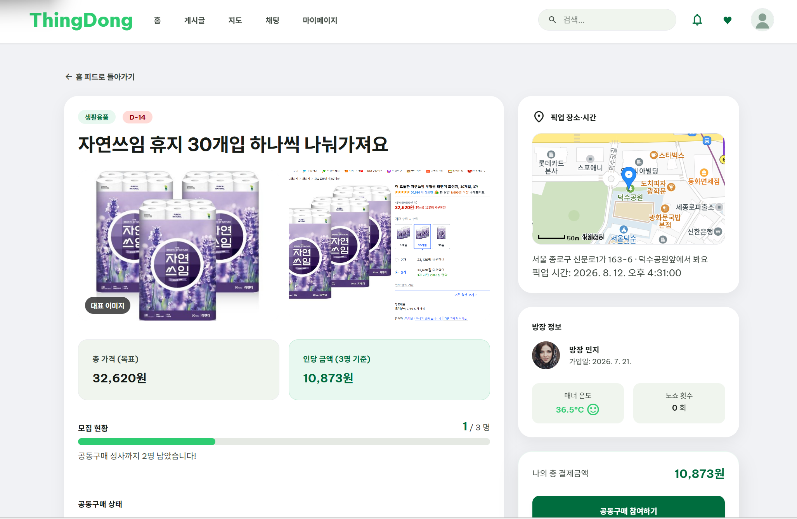
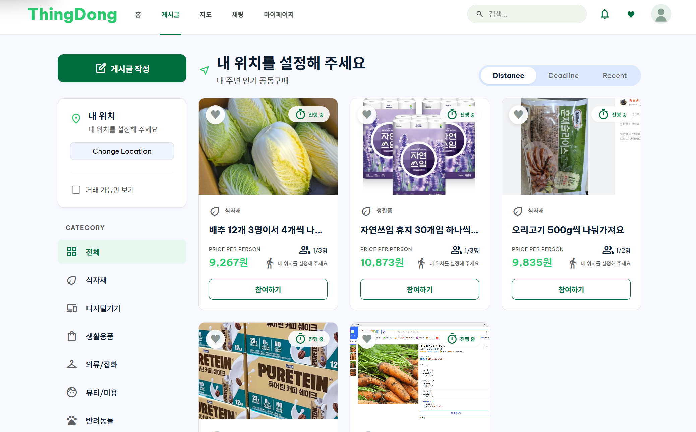

대용량의 부담
필요한 양보다 큰 상품을 사면 남기거나 보관 공간이 부족해집니다.

01 · PROBLEM
가격은 낮추고 싶지만 보관·소진·함께 살 사람 찾기가 부담이 되는 문제에서 시작했습니다.
필요한 양보다 큰 상품을 사면 남기거나 보관 공간이 부족해집니다.
채팅방에서는 현재 인원, 입금 여부, 픽업 일정을 한눈에 보기 어렵습니다.
계좌 안내와 입금 확인, 주문·픽업 공지가 반복됩니다.
02 · SOLUTION
모집 인원부터 입금, 주문, 픽업까지 다음 행동을 화면에서 확인할 수 있게 설계했습니다.
위치·카테고리·거리·찜으로 필요한 공동구매를 찾습니다.
정원이 차면 계좌를 안내하고, 참여자 신고와 방장 확인을 기록합니다.
주문 완료부터 수령 완료까지 역할별 행동을 보여 줍니다.
03 · MVP SCOPE
개발용 로그인 · 글 등록 · 대표 이미지 · 직접 참여 · 모집 완료 · 계좌 안내 · 입금 확인 · 주문/픽업 상태 · 찜 · 마이페이지 · 배포
실제 OAuth · 실결제 · 웹 푸시 · 입금 리마인드 · 노쇼 방지 · 대기열 · AI 추천
04 · LIVE DEMO
민지(방장)와 서준(참여자) 프로필을 바꿔가며 같은 공동구매를 완성합니다.
글 등록과 대표 이미지, 지도·계좌 입력
마지막 참여로 모집 완료와 계좌 안내
입금 신고와 확인, 상태 전환, 수령 완료
05 · HOME

대표 이미지, 가격, 현재/목표 인원, 마감 정보를 보여 줍니다.
카테고리 필터와 찜으로 필요한 글을 다시 찾습니다.
기본 위치와 픽업 좌표를 비교해 거리 정보를 제공합니다.
06 · CREATE & DETAIL

사진 최대 5장과 대표 이미지, 상품 URL, 총 금액과 목표 인원, 지도 핀, 상세 주소, 픽업 시간, 입금 계좌를 입력합니다.
07 · USER FLOW
08 · STATE MODEL
모집 중에는 참여 취소가 가능하고, 정원 달성 뒤에는 방장이 주문·픽업 상태를 변경합니다. 모든 참여자가 수령 완료를 기록하면 종료할 수 있습니다.
09 · MY PAGE

내가 만든 글과 참여한 글을 실제 DB 조회 결과로 표시합니다.
기본 주소와 좌표는 게시글 카드의 거리 계산에 사용됩니다.
하트로 저장한 공동구매를 다시 확인합니다.
10 · ARCHITECTURE
개발 DB는 Docker MySQL을 사용했고, 운영 DB는 Railway MySQL로 분리했습니다.
11 · AGENT COLLABORATION
필요할 때 mock-data-auditor로 목업을 점검하고, vertical-slice-auditor로 FE–BE–DB 연결을 확인했습니다.
12 · MY WORKFLOW
문제는 화면 → Network/API → 서버 로그 → DB → 배포 환경변수 순서로 나눠 확인합니다.
13 · RETROSPECTIVE
화면·서버·DB를 한 번에 연결해야 진짜 동작을 알 수 있었습니다.
AI의 초안은 출발점이고, 범위와 완료 기준을 판단하는 일은 제 몫이었습니다.
Vite·CORS·DB 접속 오류를 해결하며 로그를 읽는 순서가 생겼습니다.
14 · CLOSING
가까운 이웃과 필요한 만큼 함께 사는
위치 기반 공동구매 웹서비스
현재 MVP는 게시글 등록부터 참여, 입금 확인, 주문과 픽업 상태 관리까지 화면·서버·DB가 연결된 하나의 흐름을 완성했습니다.
NEXT · 실제 OAuth · 실결제 · 노쇼 방지 · 대기열